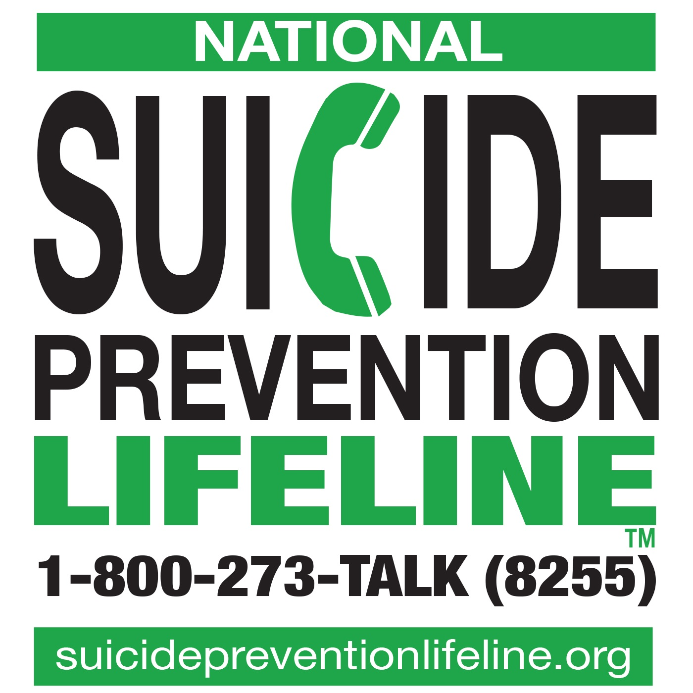
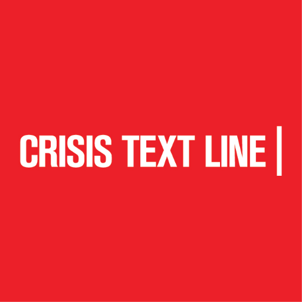
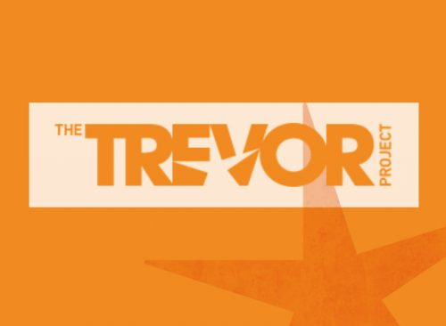
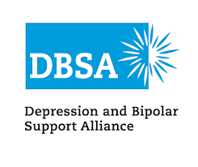
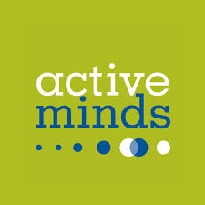
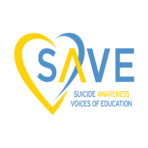
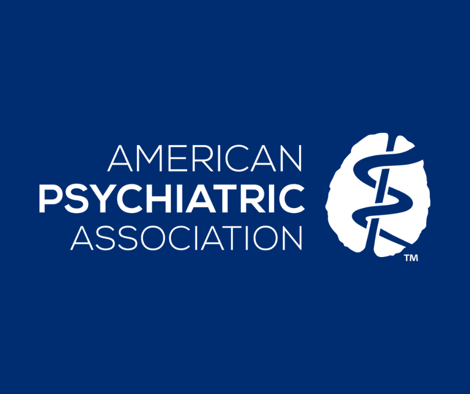

Resources
You are not alone in helping someone in crisis. There are many resources available to assess, treat and intervene. Crisis lines, counselors, intervention programs and more are available to you, as well as to the person experiencing the emotional crisis.







The President recently signed the National Suicide Hotline Designation Act into law. 988, the new three-digit number for the National Suicide Prevention Lifeline, is to be completed by July 2022. In the meantime please continue to share 1-800-273-TALK (8255) with anyone wishing to connect to the Lifeline. 988 is NOT CURRENTLY ACTIVE nationally and may not connect callers to the Lifeline.